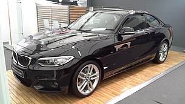
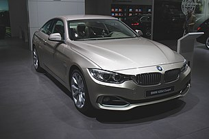

BMW 1 (F20)
BMW 2
BMW 3
BMW 4
BMW 5
BMW 6
BMW 7
BMW 8
BMW X5 (F15)
BMW X7
BMW F20 — второе поколение пятидверного компактного хэтчбэка BMW 1 серии. Как и у предшественника, у него задний привод, продольное расположение двигателя и распределение массы по осям 50:50.

BMW 2 — серия автомобилей немецкого автопроизводителя BMW, занявшая нишу между BMW 1-й серии и BMW 3-й серии. Данная серия автомобилей в виде купе (внутреннее обозначение F22) впервые была представлена 25 октября 2013 года, а продажи начались 8 марта 2014 года.
BMW 3-й серии — несколько поколений легковых автомобилей среднего класса выпускаемых с 1975 года немецким автопроизводителем BMW. Отличаются большим выбором кузовов, разнообразием двигателей и наличием спортивных версий. Самая успешная серия автомобилей в истории компании[1][2].

BMW 4 (F32) — серия компактных престижных автомобилей BMW, выпуск которых начался в июле 2013 года. Серия представляет собой отделившиеся от BMW 3 серии кузова купе и кабриолет. Помимо обычных автомобилей, с 2014 года выпускается также спортивная версия BMW M4. Предшественником нынешнего поколения (F32 (купе)/F33 (кабриолет)/F36 (четырёхдверное купе)) является BMW E92/E93, относившийся к BMW 3 серии.
BMW 5
или пятая серия BMW — автомобили бизнес-класса, производимые компанией BMW с 1972 года. В настоящее время выпускаются автомобили седьмого поколения пятой серии. Эти автомобили заменили собой ранее выпускавшуюся серию BMW Neue Klasse.
BMW 6 или шестая серия BMW — купе бизнес-класса. Производство данной модели началось с 1976 года. Основным конкурентом для этой серии являются автомобили семейства Jaguar XK.
BMW 7
или седьмая серия BMW, — автомобили серии представительского класса. Начиная с 1977 года было выпущено шесть поколений этой серии. В 2015 году в Женевском автосалоне компания BMW представила новую BMW 7 в кузове G11. Основными конкурентами BMW 7 являются автомобили Mercedes-Benz S-класс, Audi A8, Lexus LS и Jaguar XJ
BMW 8
или восьмая серия BMW, — автомобили серии класса Gran Turismo. 8 cерия была представлена в 1990 году в кузове E31 и была доступна только в виде двухдверного купе. В нее устанавливались безнаддувные бензиновые двигатели V8 и V12. E31 начали производить, как только закончилось производство 6 серии в кузове E24, однако он не считается прямым преемником. Производство было прекращено в 1999 году из-за плохих продаж.
BMW F15 — третье поколение знаменитого среднеразмерного кроссовера BMW X5 немецкой компании BMW. Выпуск модели был начат в ноябре 2013 года в Европе. Одновременно с запуском новой модели с производства была снята предыдущая — E70.
BMW X7 — полноразмерный люксовый кроссовер немецкой компании BMW, который был запущен в производство с марта 2019. Автомобиль составляет конкуренцию таким моделям, как Mercedes-Benz GLS-класс, Lexus LX и Range Rover. X7 рассчитан в первую очередь на покупателей в США, также в числе важных рынков называются Китай и Россия.